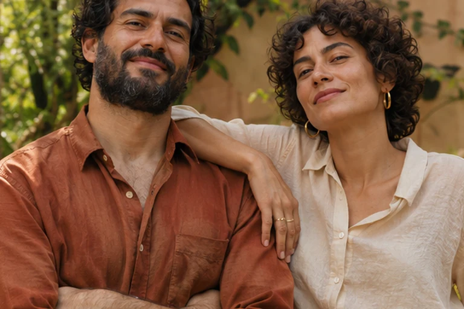

Duas pessoas no mesmo quadro.
Escolha a relação entre as pessoas e planeje o tempo de sessão.
Montar minha visita
No mesmo horário
A dupla chega junto e pode alternar registros em conjunto com imagens individuais.
Escolha a relação entre as pessoas e planeje o tempo de sessão.
Montar minha visita
A dupla chega junto e pode alternar registros em conjunto com imagens individuais.